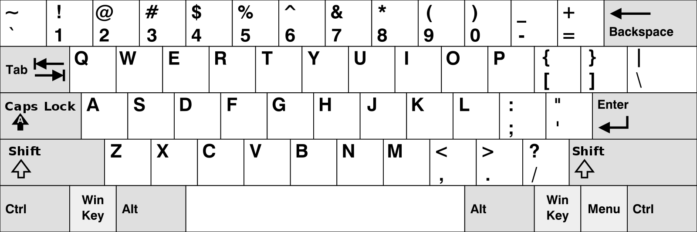
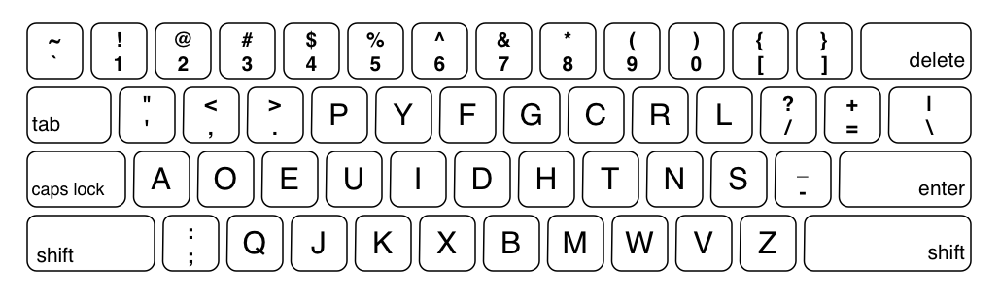

Vhodno izhodne naprave |
|---|
Vhodno izhodne naprave |
|---|
Tipkovica je naprava, ki ima procesor in električna vezja, ki nosijo podatke v in iz procesorja. Mreža, oziroma vezje, ki povezuje vse tipke s procesorjem se imenuje matrično vezje tipkovnice. Pod vsako tipko je v vezju stikalo, ki ga sklenemo, ko pritisnemo na tipko. S tem omogočimo toku, da gre skozi vezje do procesorja in mu posreduje signal. Nato procesor pridobi kodo za skeniranje in jo pretvori v binarni zapis ter pošlje v začasni pomnilnik (RAM) v računalniku. Poznamo več različnih razvrstitev tipk na tipkovnici, najbolj razširjena je QWERTY tipkovnica, ni pa najbolj učinkovita. QWERTY tipkovnico so izumili za uporabo s pisalnim strojem in je zaradi svoje uporabe v zgodovini še danes najbolj razširjena. Izumili so bolj učinkovite alternative, npr. razporeda tipk dvorak in colemak, ki pa se nista uveljavila.
Qwerty keyboard layout by Denelson83 is licensed under the Creative Commons Attribution-Share Alike 3.0 Unported license.
Glede na to, kako je registriran pritisk tipke pa ločimo membranske in mehanske tipkovnice.
Membranske tipke imajo pod vrhnjim delom nekakšen gumijast del (kupolo), ki se stisne, ko pritisnemo na tipko in pritiska na električno vezje. Te “kupole” so lahko pod tipkami samostojno ali pa izdelane vse na enem kosu gume. Najpogosteje sta pod tem gumijastim delom še dve membrani, ki se pritisneta skupaj in sprožita signal v vezju. Med njima je tretja membranska plast, ki ju ločuje takrat, ko tipka ni pritisnjena. Takšne tipke so tišje od mehanskih in ne dajo veliko tipne povratne informacije. So bolj razširjene kot mehanske in cenovno bolj dostopne.
Pri mehanski tipkovnici imajo tipke majhno vzmet, ki se stisne ko tipko pritisnemo, ter pozlačen križni kontakt, ki se ob pritisnjeni tipki premakne in poveže vezje. Mehanske tipkovnice imajo zaradi teh majhnih mehanskih delov boljšo tipno povratno informacijo in dolgo življensko dobo, so pa tudi v višjem cenovnem rangu kot membranske.
Obstaja veliko različnih mehanskih tipk, ki se med seboj razlikujejo po glasnosti in po tem, koliko pritiska moramo dati tipki, da se sproži signal.